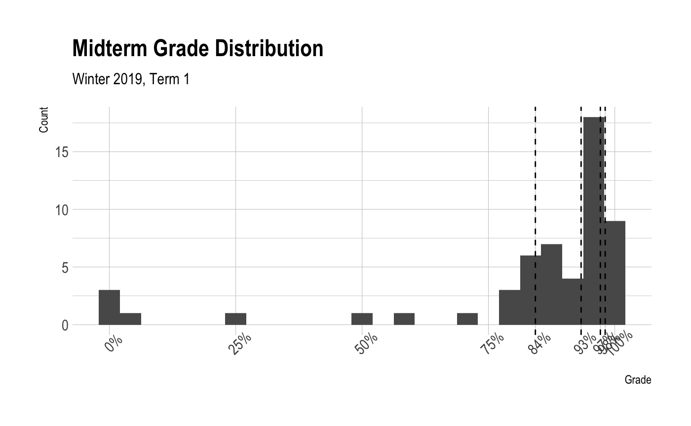

Notes
2019-02-19
“All that we call human history – money, poverty, ambition, war, prostitution, classes, empires, slavery – [is] the long terrible story of man trying to find something other than God which will make him happy.”
- C.S. Lewis (Mere Christianity)
- Announcements:
- First Utah County R User Group (UC RUG) is today from 7-8 in W110 TNRB
- R Moment: RStudio Connect
- Introduction to Permutation Tests

- Homework 6 Assigned (Due 2019-02-25 at 11:59pm)
2019-02-13
Faith is for the future. Faith builds on the past but never longs to stay there. Faith trusts that God has great things in store for each of us and that Christ truly is the “high priest of good things to come.”
- Jeffrey R. Holland (BYU Devotional January 13, 2009)
- Announcements

- R Moment: plumber
- Bootstrap Continued
Homework 5 Questions
2019-02-11
Therefore, dearly beloved brethren, let us cheerfully do all things that lie in our power; and then may we stand still, with the utmost assurance, to see the salvation of God, and for his arm to be revealed.
- Doctrine and Covenants 123:17
- Announcements
- No class next Monday in honor of Presidents Day. Class will be held on Tuesday (2019-02-19)
- First Utah County R User Group (UC RUG) is Tuesday, 2019-02-19 from 7-8 in W110 TNRB
- Exam 1 feedback and discussion on Wednesday (2019-02-13)
- R Moment: reticulate
Introduction to Bootstrap
“Bootstrapping is the practice of estimating properties of an estimator (such as its variance) by measuring those properties when sampling from an approximating distribution.” - Wikipedia
Homework 5 Assigned (Due 2019-02-19 at 11:59pm)
2019-02-04
In coming days, it will not be possible to survive spiritually without the guiding, directing, comforting, and constant influence of the Holy Ghost.
- Russel M. Nelson (GC April 2018)
- Announcements:
- First exam starts at 6:00pm after class today
- Exam administered and submitted through GitHub
- Commit and push early and often
- Open notes, open internet - not open neighbor
- Due 11:59pm on Wednesday (2019-02-06) (No late submissions accepted)
- Plan on ~2-3 hours
- No class Wednesday (2019-02-06)
- I will not have office hours on Wednesday but I will be availale via email
- First exam starts at 6:00pm after class today
- R Moment: TensorFlow
- Homework 4 Questions
- Exam Review (Solutions)
2019-01-30
…Alma noted, “Time only is measured unto men.” Because speed is a measure of distance over time, if time becomes less relevant, so does speed. Thus, in eternal things, such as our ongoing progress in becoming like God, direction is more important than speed. In the long run, the direction we are headed matters much more than the rate at which we are moving.
- Kevin J. Worthen (BYU Devotional January 8, 2019)
- Announcements:
- First exam starts at 6:00pm on Monday (2019-02-04)
- In class review on Monday (2019-02-04)
- Exam administered and submitted through GitHub
- Commit and push early and often
- Open notes, open internet - not open neighbor
- Due 11:59pm on Wednesday (2019-02-06) (No late submissions accepted)
- Plan on ~2-3 hours
- No class Wednesday (2019-02-06)
- First exam starts at 6:00pm on Monday (2019-02-04)
- R Moment: blogdown
- Homework 4 Questions
- Simulation studies for hypothesis testing:
- Practice Midterm
2019-01-28
Within each one of us, regardless of our own unique circumstances, challenges, and even mistakes we have made, there is currently an essence of the divine. It is part of our nature—a part of who we are that does not change.
- Kevin J. Worthen (BYU Devotional January 8, 2019)
- Announcements:
- RStudio::conf talks are now online
- R Moment: Local Interpretable Model-agnostic Explanations (lime)
- Homework 3 questions
- Simulation study for simple linear regression
- Homework 4 Assigned (Due 2019-02-04 at 11:59pm)
2019-01-23
Face your doubts. Master your fears. “Cast not away therefore your confidence.” Stay the course and see the beauty of life unfold for you.
- Jeffrey R. Holland (BYU Devotional March 2, 1999)
- Announcements
- R Moment: cheatsheets
- Simulation Study Outline
- In class exercise (Solutions)
- Hypothesis Test
- Homework 3 Assigned (Due 2019-01-28 at 11:59pm)
2019-01-16
And it came to pass that the voice of the Lord came to them in their afflictions, saying: Lift up your heads and be of good comfort, for I know of the covenant which ye have made unto me; and I will covenant with my people and deliver them out of bondage. And I will also ease the burdens which are put upon your shoulders, that even you cannot feel them upon your backs, even while you are in bondage; and this will I do that ye may stand as witnesses for me hereafter, and that ye may know of a surety that I, the Lord God, do visit my people in their afflictions.
- Announcements:
- No class next Monday for Martin Luther King Jr. Day
- Homework 2 is due Tuesday at 11:59pm
- RStudio::conf live stream starts tomorrow!
- Schedule
- I speak from 2:08pm - 2:28pm
- R Moment: r2d3
- Confidence Intervals
- Simulation Study Outline
2019-01-14
Obedience opens the door to the constant companionship of the Holy Ghost. And the spiritual gifts and abilities activated by the power of the Holy Ghost enable us to avoid deception—and to see, to feel, to know, to understand, and to remember things as they really are. You and I have been endowed with a greater capacity for obedience precisely for these reasons.
- David A. Bednar (Ensign June 2010)
- Announcements:
- Homework 1 due today at 11:59pm
- R Moment: gganimate
- Homework 1 questions
- STAT 223 coding standards
- A word about RMarkdown and Notebooks
- Flipping Coins
- Confidence intervals to assess Monte Carlo (simulation) error
- Additional simulation study examples:
- Homework 2 is assigned (Due 2019-01-22 at 11:59pm)
2019-01-09
I testify that his intelligence is vastly superior in every field to the very brightest mortals in those fields and that his intellect in scope and truth far exceeds all human intellects. I thank him for encapsulating that exquisite mind in both perfect love and perfect humility. His brilliance is not the “catch-me-if-you-can” kind, but a pleading and patient, “Come, follow me.”
- Neal A. Maxwell (GC April 1976)
- R Moment: Shiny
- Finish git and GitHub setup
- RStudio House Keeping
- Never save
.RData - Never restore
.RData
- Never save
- Getting started with Homework 1
- Review of STAT 123
- A word about RMarkdown and Notebooks
- Introduction to simulation studies:
- “Simulation study” and “Monte Carlo study” are synonymous.
- Represent a real-world process programatically in order to evaluate statistical properties
- Uses include:
- Describing distributions (e.g., mean, variance, quantiles).
- Evaluating point estimators.
- Evaluating confidence intervals.
- Investigating the properties and performance of testing hypothesis procedures.
- Checking the finite-sample statistical properties of estimators and testing procedures that have been motivated through asymptotics.
- and many others…
- Especially useful when theoretical derivations are unavailable, difficult, or intractable.
- Flipping coins
2019-01-07
He felt all that was sad, wicked, or bad, All the pain we would ever know. While His friends were asleep, He fought to keep His promise made long ago. Gethsemane. Jesus loves me, So He went willingly to Gethsemane.
- Melanie Hoffman (Gethsemane)
- Stat 123 Q&A
- Overview of the course.
- Getting Started in STAT 223
- STAT 223 coding standards
- Review of STAT 123
- Homework 1 is assigned (due 2019-01-14 at 11:59pm)